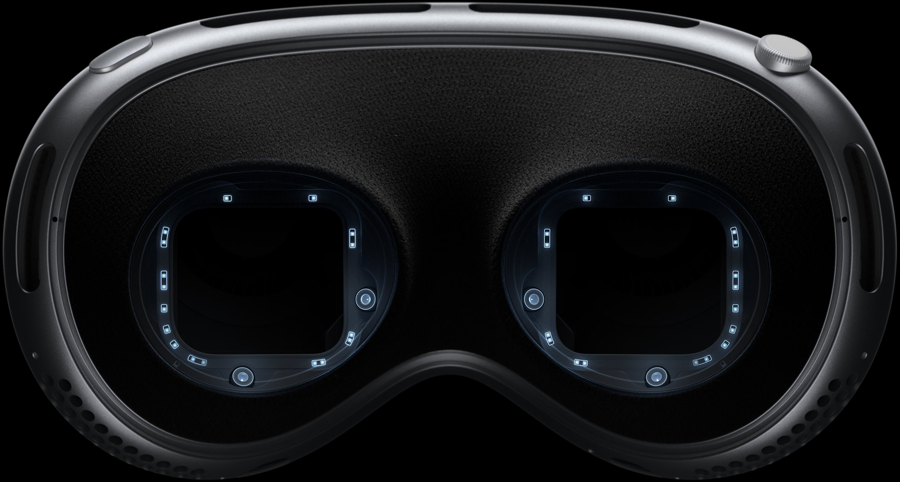
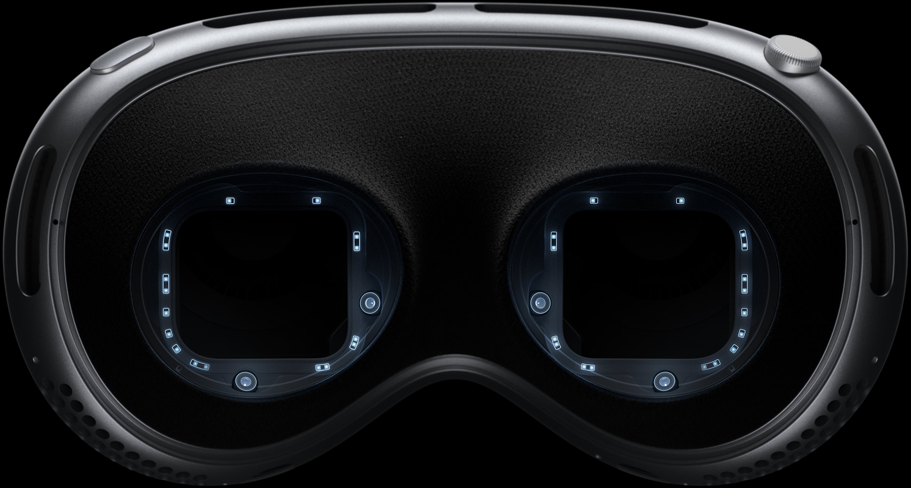

Introduction

Welcome to the era of spatial computing.
Apple Vision Pro seamlessly blends
digital content with your physical space.

Apps
Free your desktop.
And your apps will follow.
Your apps live in your space.
With Vision Pro, you have an infinite canvas that transforms how you use the apps you love. Arrange apps anywhere and scale them to the perfect size, making the workspace of your dreams a reality — all while staying present in the world around you. Browse the web in Safari, create a to-do list in Notes, chat in Messages, and seamlessly move between them with a glance.
Photos and Videos
Be in the moment.
All over again.
Your memories come alive.
Vision Pro is Apple’s first 3D camera. You can capture magical spatial photos and spatial videos in 3D, then relive those cherished moments like never before with immersive Spatial Audio. Your existing library of photos and videos looks incredible at remarkable scale. And panoramas wrap around you — making you feel like you’re standing right where you took them.
Design
Designed by Apple.
Apple Vision Pro is the result of decades of experience designing high‑performance, mobile, and wearable devices — culminating in the most ambitious product Apple has ever created. Vision Pro integrates incredibly advanced technology into an elegant, compact form, resulting in an amazing experience every time you put it on.
Enclosure. A singular piece of three-dimensionally formed laminated glass flows into an aluminum alloy frame that curves to wrap around your face.
Light Seal. The Light Seal gently flexes to conform to your face, delivering a precise fit while blocking out stray light.
Head Band. The Head Band provides cushioning, breathability, and stretch. The Fit Dial lets you adjust Vision Pro precisely to your head.
Power. The external battery supports up to 2 hours of use, and all-day use when plugged in.
Sound. Speakers positioned close to your ears deliver rich Spatial Audio while keeping you aware of your surroundings.
EyeSight. An outward display reveals your eyes while wearing Vision Pro, letting others know when you are using apps or fully immersed
A singular piece of three-dimensionally formed laminated glass acts as an optical surface for the cameras and sensors that view the world. It flows seamlessly into a custom aluminum alloy frame that gently curves to wrap around your face while serving as an attachment point for the Light Seal.

Technology
Innovation you can
see, hear, and feel.
Pushing boundaries from the inside out. Spatial experiences on Vision Pro are only possible through groundbreaking Apple technology. Displays the size of a postage stamp that deliver more pixels than a 4K TV to each eye. Incredible advances in Spatial Audio. A revolutionary dual‑chip design featuring custom Apple silicon. A sophisticated array of cameras and sensors. All the elements work together to create an unprecedented experience you have to see to believe.
More pixels than a 4K TV. For each eye.
The custom micro‑OLED display system features 23 million pixels, delivering stunning resolution and colors. And a specially designed three‑element lens creates the feeling of a display that’s everywhere you look.
Our most advanced
Spatial Audio system ever.
Dual-driver audio pods positioned next to each ear deliver personalized sound while letting you hear what’s around you. Ambient Spatial Audio makes sounds feel like they’re coming from your surroundings. And with audio raytracing, Vision Pro analyzes your room’s acoustic properties — including the physical materials — to adapt and match sound to your space.
 

Responsive, precision eye tracking.
A high-performance eye tracking system of LEDs and infrared cameras projects invisible light patterns onto each eye. This advanced system provides ultraprecise input without your needing to hold any controllers, so you can accurately select elements just by looking at them.


A sophisticated sensor array.
A pair of high-resolution cameras transmit over one billion pixels per second to the displays so you can see the world around you clearly. The system also helps deliver precise head and hand tracking and real‑time 3D mapping, all while understanding your hand gestures from a wide range of positions.
Revolutionary dual‑chip
performance.
A unique dual‑chip design enables the spatial experiences on Vision Pro. The powerful M2 chip simultaneously runs visionOS, executes advanced computer vision algorithms, and delivers stunning graphics, all with incredible efficiency. And the brand-new R1 chip is specifically dedicated to process input from the cameras, sensors, and microphones, streaming images to the displays within 12 milliseconds — for a virtually lag-free, real-time view of the world.
Privacy and Security
When it comes to privacy,
we don’t blink.
Privacy and security built in. Like every Apple product and service, Vision Pro was designed to help protect your privacy and keep you in control of your data. It builds on the foundation of existing Apple privacy and security features with new technologies like Optic ID, a secure authentication system that uses the uniqueness of your iris.
- Testing conducted by Apple in May 2023 using preproduction Apple Vision Pro units and software. Testing consisted of full battery discharge while performing each of the following tasks: video playback, internet browsing, spatial video capture, and FaceTime. Video playback tested in conjunction with an Environment, using 2D movie content purchased from the Apple TV app. Internet browsing tested using 20 popular websites. FaceTime tested between two Apple Vision Pro units with Personas enabled. Tested with Wi-Fi associated to a network. Battery life depends on device settings, usage, network, environmental conditions, and many other factors. Battery tests are conducted using specific Apple Vision Pro units; actual results may vary.
- Valid prescription required. Not all prescriptions are supported. Vision correction accessories are sold separately.
- © 2023 TAKE-TWO INTERACTIVE SOFTWARE INC. All Rights Reserved.
- © 2023 NBA Properties, Inc. All Rights Reserved. Officially Licensed Product of the National Basketball Association.
- A subscription may be required for some services. Not all content may be available in all areas.
- Everything Everywhere All At Once © 2022 A24 Distribution, LLC. All rights reserved.
- Avatar: The Way of Water © 2022 20th Century Studios and TSG Entertainment Finance LLC.
- Users must be 13 years or older.
- Available early next year on apple.com and at Apple retail stores in the U.S.
- This device has not been authorized as required by the rules of the Federal Communications Commission. This device is not, and may not be, offered for sale or lease, or sold or leased, until authorization is obtained.